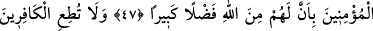

PEYGAMBERLERİN SONUNCUSU
40. Muhammed, sizin erkeklerinizden hiçbirinin babası değildir. Fakat o, Allâh’ın
Rasûlü ve peygamberlerin sonuncusudur. Allah her şeyi hakkıyla bilendir.
41. Ey îman edenler! Allâh’ı çokça zikredin.
42. Ve O’nu sabah-akşam tesbih edin.
43. Sizi karanlıklardan aydınlığa çıkarmak için üzerinize rahmetini gönderen
O’dur. Melekleri de size istiğfar eder. Allah, mü’minlere çok merhametlidir.
44. Kendisine kavuştukları gün, Allâh’ın onlara iltifatı, “selâm” dır. Allah onlara
çok değerli mükâfat hazırlamıştır.
45. Ey Peygamber! Biz seni hakikaten bir şâhid, bir müjdeleyici ve bir uyarıcı
olarak gönderdik.
46. Ve izniyle, Allâh’a dâvetçi ve nûr saçan bir kandil olarak (gönderdik).
47. Allah’tan büyük bir lütfa ereceklerini mü’minlere müjdele.
48. Kâfirlere ve münafıklara boyun eğme. Onların eziyetlerine aldırma. Allâh’a
güvenip dayan, vekîl ve destek olarak Allah yeter.
O, Hâşim oğlu Abdülmuttalib -ki ismi Şeybe’dir- oğlu Abdullah oğlu
“Muhammed”dir.
Tercih edilen görüşe göre bir kişinin müslüman olması için Hz. Peygamber (s.a.)’in
babasının ve dedesinin ismini bilmesi şart değildir. Bilakis bu konuda yalnız Hz.
Peygamber (s.a.)’in ism-i şerîfini bilmesi yeterlidir. Molla Ahî Çelebi’nin Hediyyetü’l-
mehdiyyîn isimli eserinde böyle geçmektedir.